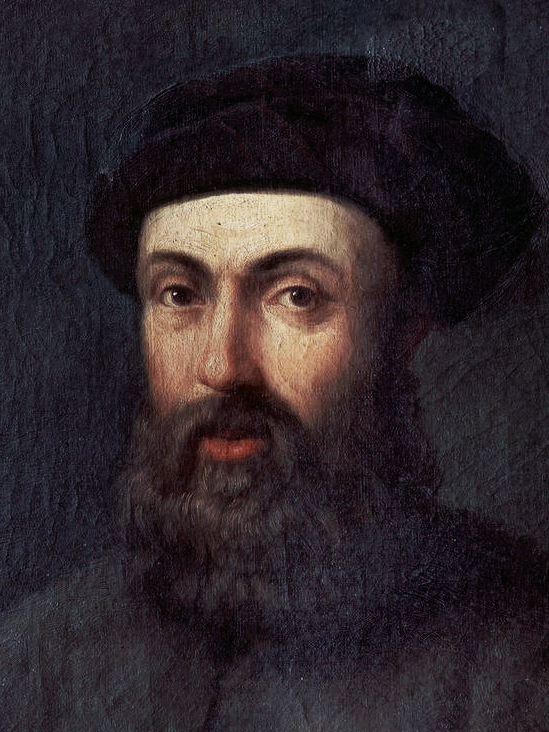
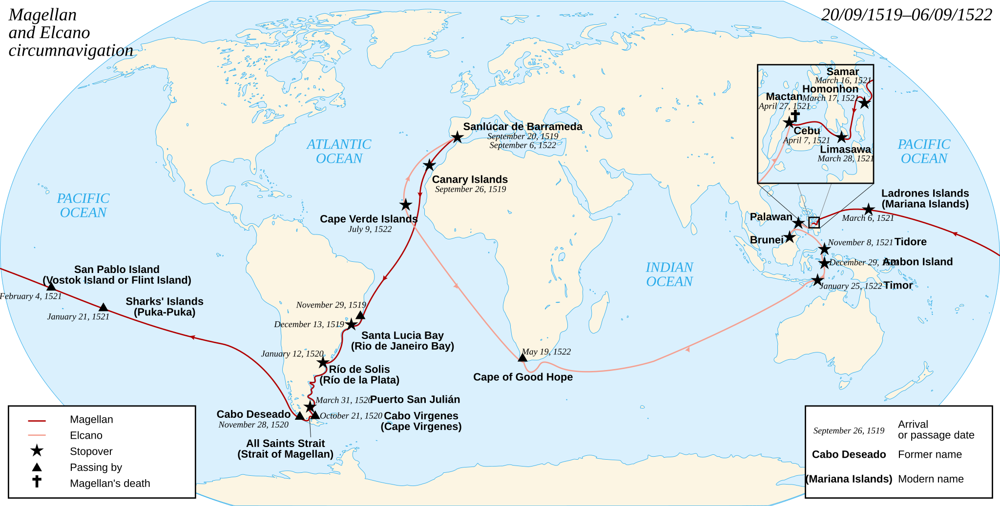

Доведіть форму Землі без космічного фото
Натискайте лише на ті спостереження, які справді можуть бути доказами кривизни поверхні. Після вибору сформулюйте, що саме вони доводять.
Оберіть докази
Міні-висновок
Один доказ може мати альтернативне пояснення. Кілька незалежних спостережень, що узгоджуються між собою, дають значно сильніший висновок.
Наскільки велика Земля?
Від центра Землі до поверхні.
Приблизно удвічі більший за радіус.
Шлях навколо Землі по екватору.
Калькулятор планети
Введіть радіус і перевірте, яку довжину кола дає формула C = 2πR.
Проблема
Чому куляста форма Землі має географічне значення?
Магеллан: хто насправді здійснив першу навколосвітню подорож?

1519: експедиція з п’яти кораблів вирушила з Іспанії на захід у пошуках морського шляху до Островів прянощів.
1520: кораблі пройшли протокою на півдні Південної Америки, яка згодом отримала ім’я Магеллана, і вийшли в Тихий океан.
1521: Магеллан загинув на острові Мактан на Філіппінах. Тому він особисто не завершив коло навколо Землі.
1522: корабель «Вікторія» під командуванням Хуана Себастьяна Елькано повернувся до Іспанії. Саме експедиція Магеллана—Елькано вперше завершила задокументовану навколосвітню подорож.
Пройдіть маршрут експедиції
Старт, 1519. Рух на захід через Атлантику.
Прохід між материком Південна Америка й Вогняною Землею.
Тут у 1521 р. Магеллан загинув.
Одна з головних цілей експедиції — прянощі.
«Вікторія» завершила коло під командуванням Елькано у 1522 р.

Як зображають Землю
Дивіться з питанням
Після перегляду дайте дві відповіді:
1. Чому глобус краще передає форму планети, ніж плоска карта?
2. Чому карта все одно зручніша для багатьох практичних задач?
CER: чи довела експедиція кулястість Землі?
C — Claim
E — Evidence
R — Reasoning
Уточнення для сильної відповіді: навколосвітня подорож була важливим практичним підтвердженням глобальності й зв’язності океанічного простору, але знання про кулястість Землі існували задовго до XVI ст.
§4 + міні-дослідження
Обов’язково
Прочитайте §4 «Форма і розміри Землі. Навколосвітня подорож Фернана Магеллана» (початок приблизно зі с. 16). Складіть 5-пунктову хронологію експедиції та одним реченням поясніть роль Елькано.
Електронний підручник →Дослідження на вибір
А. Знайдіть 3 незалежні докази кулястості Землі, доступні людині без польоту в космос.
Б. Поясніть, чому 40 075 км — це не «діаметр Землі».
В. З’ясуйте, чому експедиція, рухаючись переважно на захід, після повернення мала проблему з календарною датою.
10 питань = 10 балів
Спочатку введіть дані учня/учениці.